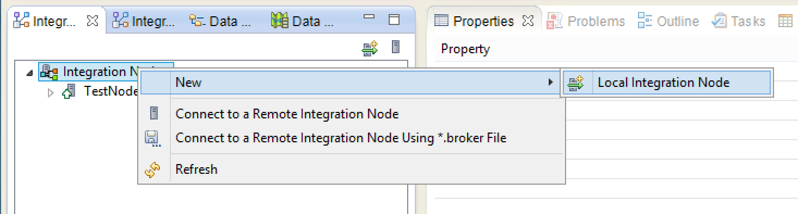
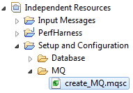
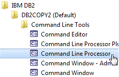
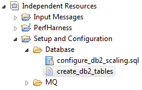
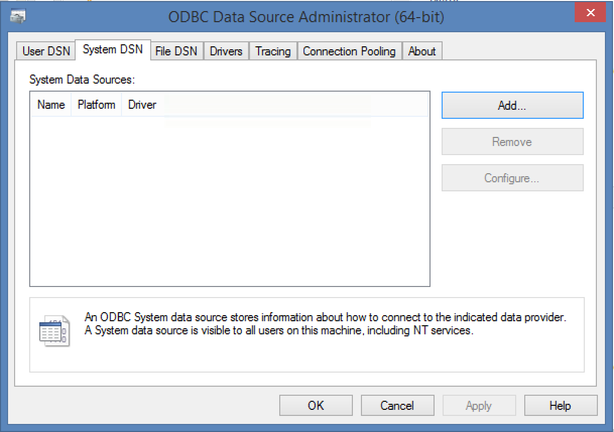
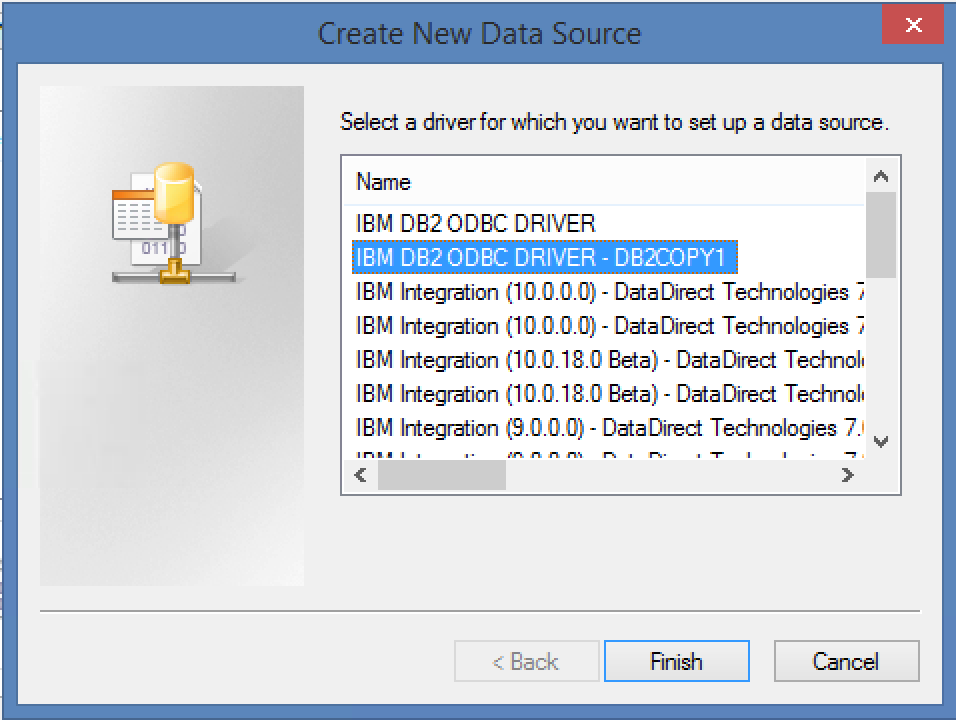
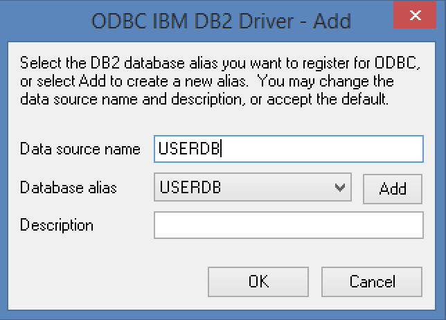
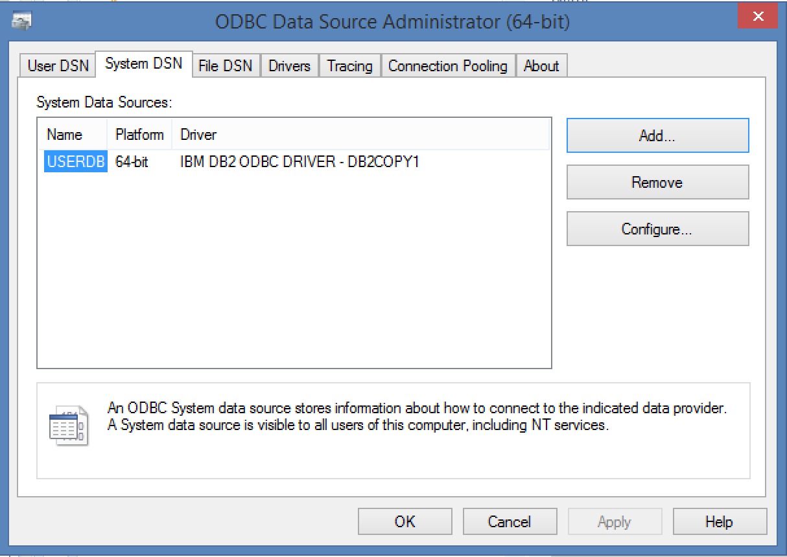
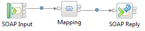
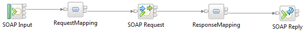

If you are going to be running any of the samples that require MQ (Aggregation, Coordinated Request Reply, FileOutFileIn, ISO8583, Large Message, Routing Cache and Transformation) then you will need a integration node with a default queue manager. To create this please follow the sections below - Default Configuration & MQ Resources. If you only want to use the HTTP/SOAP based samples you can use the built in TestNode_{username}
Default Configuration
Create a Queue Manager
- From a command console run "crtmqm TestNodeQM"
- Start the queue manager, run "strmqm TestNodeQM"
- Create the Integration Node queues, run "<IIB-InstallDir>\server\sample\wmq\iib_createqueues.cmd TestNodeQM"
- Update the queue manager listener port "echo alter LISTENER(SYSTEM.DEFAULT.LISTENER.TCP) TRPTYPE(TCP) PORT(2414) CONTROL(QMGR) | runmqsc TestNodeQM"
- Start the queue manager listener "echo start LISTENER(SYSTEM.DEFAULT.LISTENER.TCP) | runmqsc TestNodeQM"
- If you are running against MQ8 you may also need to run:
- echo ALTER AUTHINFO(SYSTEM.DEFAULT.AUTHINFO.IDPWOS) AUTHTYPE(IDPWOS) CHCKCLNT(OPTIONAL)| runmqsc TestNodeQM
- echo REFRESH SECURITY TYPE(CONNAUTH) | runmqsc TestNodeQM
Create the Integration Node
- Go to Integration Nodes view
- Right click “Integration Nodes", select “New” then "Local Integration Node".

- Insert the name of the Integration Node (TestNodeMQ) and default queue manager (TestNodeQM)
- You should now see TestNodeMQ in the “Integration Nodes” view, including the integration server called default.
MQ Resources
Create the MQ resources required to run the performance samples:
- Start an IIB console window.
- Type runmqsc TestNodeQM
- Copy the contents of the file create_MQ.mqsc, from the “Setup and Configuration” folder in the workspace.

- Paste the MQ commands into the console window.
- Type end to complete the updates.
File node directory setup
In order to run the File Out File In performance application, the following environment variable needs to be configured for the broker.
- In the directory C:\ProgramData\IBM\MQSI\common\profiles, create a new file call performanceTests.cmd.
- Edit performanceTests.cmd, adding the line
set MQSI_FILENODES_ROOT_DIRECTORY=c:\temp
- Create the following directory structure c:\temp\file\input
- Stop the broker by running mqsistop TestNodeMQ.
- Start the broker by running mqsistart TestNodeMQ.
DB2 Resources
Only follow this step if you plan to deploy and test the DataWarehouse Sample.
The Routing Cache Sample requires a database called USERDB and a table called routing_table to be configured. These instructions assume this will be done in DB2, however an alternative database can be used.
- Start the “DB2 CommandLine Processor” window

- Run the commands in the create_db2_tables script from the “Setup and Configuration” folder in the workspace.

- Type quit to complete the updates.
- Start an IIB console window.
- Run the following command to setup the database userid and password: mqsisetdbparms TestNodeMQ –n USERDB –u <userId> -p <password>
-
If running the File Out File In performance application, go to the next section, otherwise stop and start the broker here:
- Stop the broker by running mqsistop TestNodeMQ.
- Start the broker by running mqsistart TestNodeMQ.
- Next we must had a system ODBC referance for USERDB. On windows this is done by launching the ODBC panel (Control Panel-Administrative Tools-ODBC Data Sources (64-bit). Once open select the System panel as shown below 
- Select "Add" and select your DB2 Instance 
- Select the USERDB instance and give it a "Data Source Name" of USERDB, Select "Add" and select your DB2 Instance 
- Once you have completed this it should be listed in your "System Data Sources" 
Global Cache Setup
The Coordinated Request Reply sample uses the global cache for storing its transient data. By default the global cache is disabled on an Integration Server. To enable it run the following commands
- mqsistop TestNodeMQ
- mqsichangebroker TestNodeMQ -b default
- mqsistart TestNodeMQ
REST API Setup
RESTful API sample requires the Integration Node to be configured to user the Intergration Server HTTP Listener. If you have a default queue manager, by default the HTTP nodes will use the Integration Node wide listener. If there is no default queue manager there no extra configuration is required. To update the configuration to use the Intergration Server HTTP Listener run the following commands
- mqsistop TestNodeMQ
- mqsichangeproperties TestNodeMQ -e default -o ExecutionGroup -n httpNodesUseEmbeddedListener -v true
- mqsichangeproperties TestNodeMQ -b httplistener -o HTTPListener -n startListener -v false
- mqsistart TestNodeMQ
SOAP Consumer and Provider setup
The SOAPProvider application consists of:

It can simply be deployed to the integration server default. It listens on the default SOAP 7800 port. The URL is /SoapProvider.
The SOAPConsumer application consists of:

It relies on calling the SOAPProvider application using the SOAP Request node. The SOAPConsumer application should be deployed with the SOAPProvider application to the integration server default.
The SOAPConsumer application listens on the default SOAP 7800 port, its URL is /SoapConsumer. The SOAP Request call is made to http://localhost:7800/SoapProvider which is assumed to be the SOAPProvider application.
Note: When the IBM Integration Bus Performance team test the SOAPConsumer application, the SOAPProvider application is deployed to a remote machine, which more closely resembles customer scenarios. This can easily be achieved by creating an additional broker on the remote machine and deploying the SOAPProvider application separately from the SOAPConsumer application. Within the SOAPConsumer application, the “Web service URL” value, on the “HTTP Transport” tab of the SOAP Request node will need to be changed to refer to the location of the SOAPProvider application.
RESTful API setup
The RESTful API (REST_TransactionService) relies on calling a backend SOAP_TransactionService from a SOAP Request node. The SOAP_TransactionService application should be deployed with the REST_TransactionSercice to the integration server default.
The SOAP_TransactionService listens on the localhost:7800/TransactionServiceSOAP 7800 port. The SOAP Request nodes makes requests to this URL with "makePayment" and "retrieveTransactions" operations which is assumed to be servied by the SOAP_TransactionService.
Note: When the IBM Integration Bus Performance team test the REST_TransactionService, the SOAP_TransactionService is deployed to a remote machine, which more closely resembles customer scenarios. This can easily be achieved by creating an additional broker on the remote machine and deploying the SOAP_TransactionService separately from the REST_TransactionService. Within the REST_TransactionService, the “Web service URL” value, on the “HTTP Transport” tab of the SOAP Request node will need to be changed to refer to the location of the SOAP_TransactionService.
IIB Performance Tuning
The following performance tuning will help improve message rates and response times:
- mqsichangeproperties TestNodeMQ -e default -o HTTPConnector -n maxThreads -v "200"
- mqsistop TestNodeMQ
- mqsistart TestNodeMQ